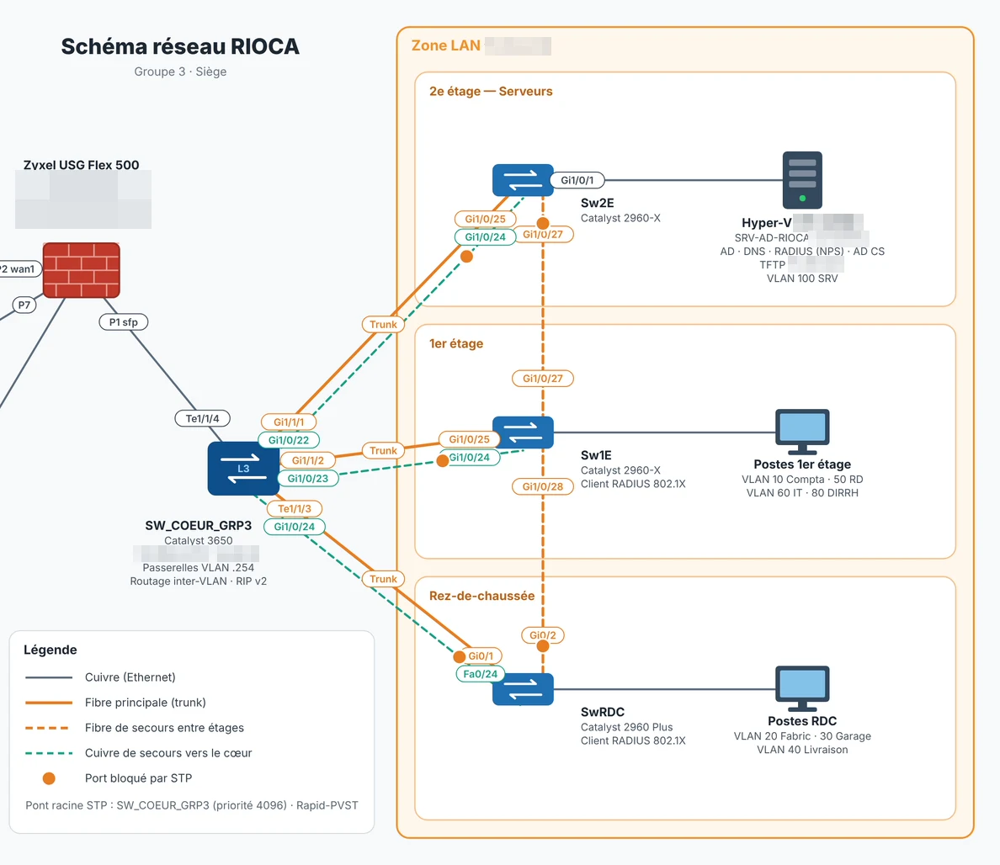
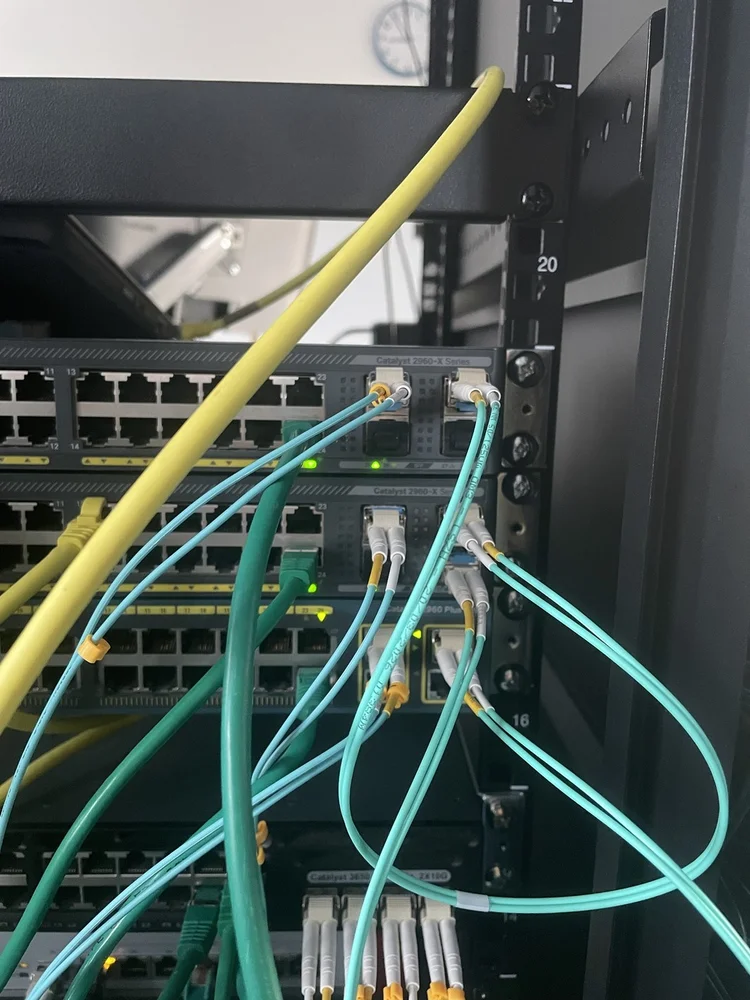
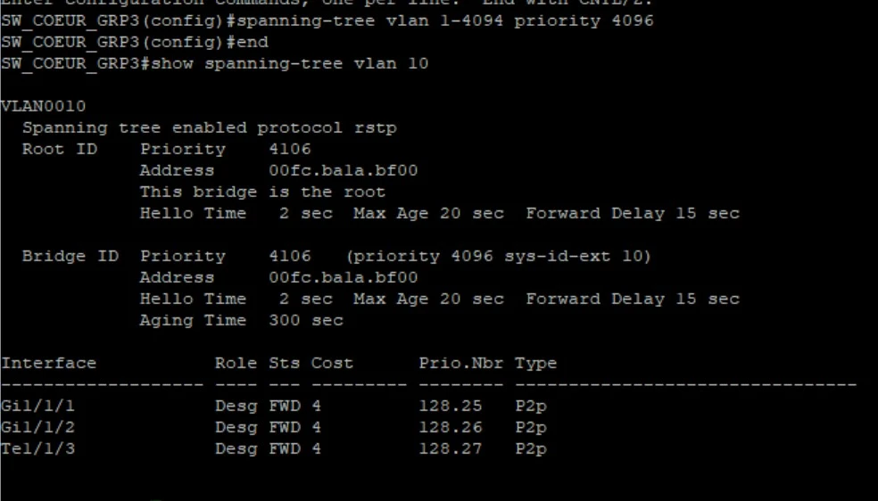
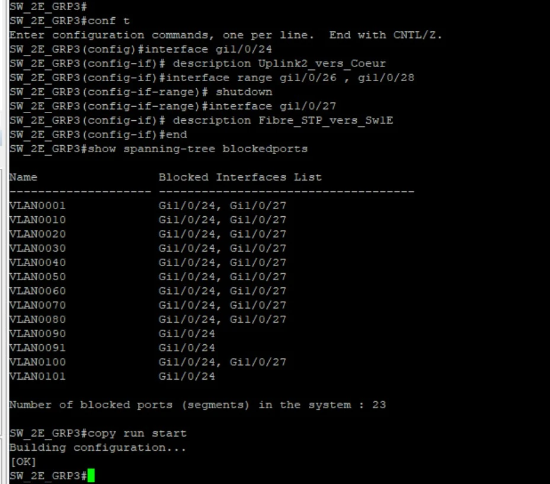
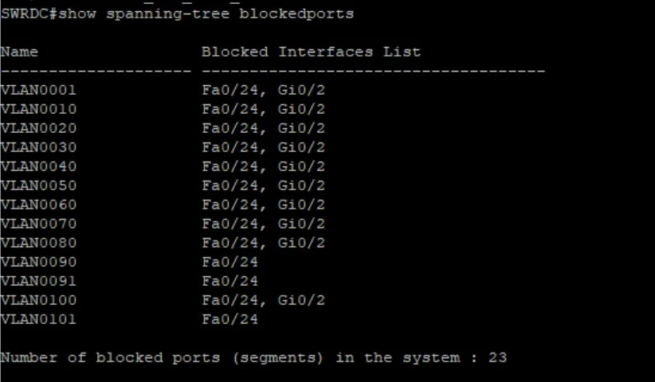
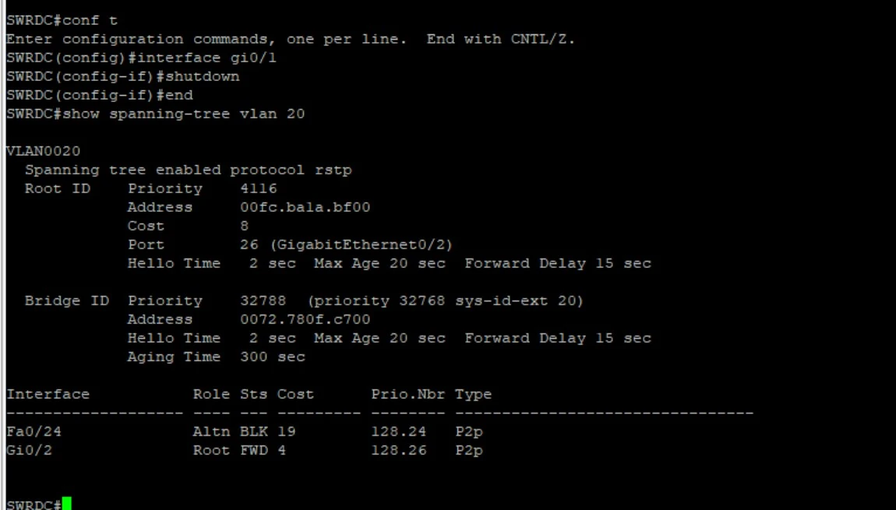
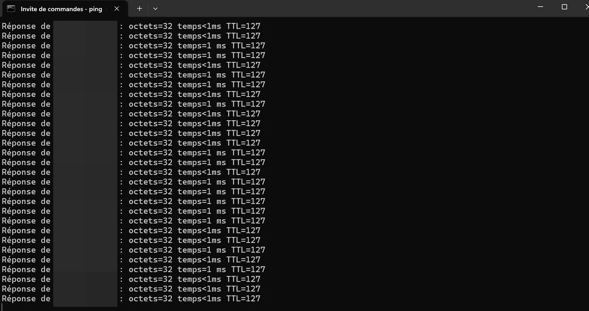
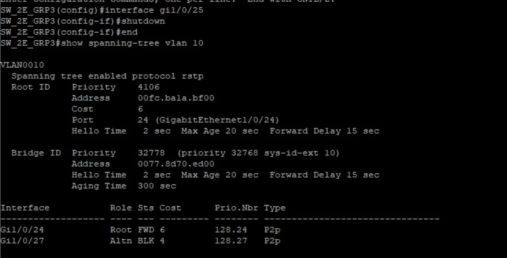
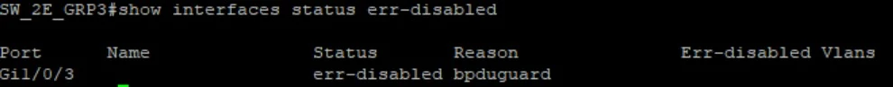

01Contexte
Le réseau local de RIOCA, construit lors de la maquette, était en étoile : le switch cœur était relié en fibre à un switch par étage (Sw2E au 2e étage, avec les serveurs, Sw1E au 1er étage et SwRDC au rez-de-chaussée). Chaque étage n'avait qu'un seul lien : si une fibre était coupée, l'étage perdait l'accès au réseau et aux serveurs.
J'ai ajouté deux types de liens de secours :
- un deuxième lien, en cuivre, entre chaque étage et le switch cœur ;
- des liens en fibre entre les étages (Sw2E – Sw1E et Sw1E – SwRDC).
Ces liens forment des boucles. Sans protection, une trame de diffusion y tournerait sans fin et saturerait le réseau en quelques secondes. Le Spanning Tree (STP) l'empêche : il bloque les liens en trop et les réactive si un lien tombe.


02Choix
| Choix | Pourquoi |
|---|---|
| Mode Rapid-PVST | Bascule en moins d'une seconde, au lieu de 30 à 50 secondes avec le STP de base, et un arbre par VLAN |
| Switch cœur en pont racine (priorité 4096) | C'est le switch central, relié à tous les étages : tous les chemins doivent partir de lui |
| Sw1E en racine de secours (priorité 8192) | Il est relié aux deux autres étages |
| Fibre principale gardée vers le cœur | Le câble cuivre de secours a le même débit (1 Gbit/s) que la fibre sur Sw2E et Sw1E : on lui donne un coût de 6 au lieu de 4 pour que la fibre reste le chemin normal |
| PortFast et BPDU Guard sur les ports des postes | Le poste a le réseau tout de suite, et si quelqu'un branche un switch sur une prise, le port se coupe |
03État de départ
Le switch cœur, Sw2E et Sw1E étaient déjà en Rapid-PVST, mais SwRDC était resté en PVST. Aucune priorité n'était réglée : à égalité, STP élit le switch qui a la plus petite adresse MAC. C'était SwRDC, un simple switch d'étage, qui était pont racine de tous les VLAN :
SWRDC#show spanning-tree summary
Switch is in pvst mode
Root bridge for: VLAN0001, VLAN0010, VLAN0020, VLAN0030, VLAN0040, VLAN0050
VLAN0060, VLAN0070, VLAN0080, VLAN0090-VLAN0091, VLAN0100-VLAN010104Configuration
Mode et priorités :
SWRDC(config)#spanning-tree mode rapid-pvst
SW_COEUR_GRP3(config)#spanning-tree vlan 1-4094 priority 4096
SW_1ER_GRP3(config)#spanning-tree vlan 1-4094 priority 8192Sw2E et SwRDC restent à la priorité par défaut (32768). Sur les ports des postes, et sur ceux des serveurs pour Sw2E :
interface range gi1/0/1-21
spanning-tree portfast
spanning-tree bpduguard enableLes liens de secours :
| Lien | Ports | Type | Coût STP |
|---|---|---|---|
| Sw2E – cœur | Gi1/0/24 – Gi1/0/22 | Cuivre 1 Gbit/s | 6 (forcé) |
| Sw1E – cœur | Gi1/0/24 – Gi1/0/23 | Cuivre 1 Gbit/s | 6 (forcé) |
| SwRDC – cœur | Fa0/24 – Gi1/0/24 | Cuivre 100 Mbit/s | 19 |
| Sw2E – Sw1E | Gi1/0/27 – Gi1/0/27 | Fibre 1 Gbit/s | 4 |
| Sw1E – SwRDC | Gi1/0/28 – Gi0/2 | Fibre 1 Gbit/s | 4 |
Sur les 2960-X, les ports 25 à 28 sont des emplacements fibre (SFP). Sur SwRDC, Gi0/2 a une prise cuivre et une prise fibre : on force la fibre avec media-type sfp. Exemple d'un lien cuivre vers le cœur :
SW_2E_GRP3(config)#interface gi1/0/24
SW_2E_GRP3(config-if)#description Uplink2_vers_Coeur
SW_2E_GRP3(config-if)#switchport mode trunk
SW_2E_GRP3(config-if)#spanning-tree cost 6
SW_2E_GRP3(config-if)#no shutdownPourquoi un coût de 6 : sans lui, le cuivre et la fibre ont le même coût (4). À égalité, STP garde le lien qui arrive sur le port du cœur au plus petit numéro : Gi1/0/22, le cuivre, passait avant Gi1/1/1, la fibre, et c'est la fibre qui était bloquée. Avec 6, la fibre (4) reste devant. Et si la fibre tombe, le cuivre direct (6) passe avant le chemin par un autre étage (4 + 4 = 8).
Les ports fibre non utilisés sont éteints, et la configuration est sauvegardée (copy run start) sur les 4 switchs.


05Arbre obtenu
Chaque étage passe par sa fibre principale vers le cœur (coût 4). Les liens de secours vers le cœur sont bloqués, car ils coûtent plus cher (6 ou 19). Sur les fibres entre étages, les deux côtés ont le même coût : c'est le switch au plus petit identifiant (Bridge ID) qui garde son port actif, Sw1E, grâce à sa priorité de 8192.
| Switch | Port vers la racine | Ports bloqués |
|---|---|---|
| Switch cœur | Aucun (pont racine) | Aucun |
| Sw2E | Gi1/0/25 (fibre) | Gi1/0/24 et Gi1/0/27 |
| Sw1E | Gi1/0/25 (fibre) | Gi1/0/24 |
| SwRDC | Gi0/1 (fibre) | Fa0/24 et Gi0/2 |






06Tests de panne
Coupure de la fibre de SwRDC. Depuis un poste du rez-de-chaussée, on lance un ping -t vers le contrôleur de domaine. Pendant le ping, on coupe la fibre de SwRDC vers le cœur (shutdown sur Gi0/1).
SwRDC passe alors par la fibre vers Sw1E, puis par la fibre de Sw1E vers le cœur (coût 4 + 4 = 8). Le cuivre direct, à 100 Mbit/s (coût 19), reste en secours. Aucun ping n'est perdu : avec Rapid-PVST, le port de secours passe tout de suite en transmission.




Coupure de la fibre de Sw2E. On coupe la fibre de Sw2E vers le cœur (shutdown sur Gi1/0/25). Le cuivre direct (6) passe avant la fibre par Sw1E (4 + 4 = 8), qui reste bloquée : c'est le coût forcé de la partie 4 qui joue.


BPDU Guard. On branche un switch sur un port de poste : le port doit se couper. Le premier essai, entre deux ports protégés par l'authentification 802.1X, n'a rien donné. Un port 802.1X non authentifié ne laisse passer aucune trame, même pas les BPDU, les messages de STP : sur les prises des postes, le 802.1X bloque donc déjà un switch branché. Le test a été refait sur un port sans 802.1X de Sw2E, remis à zéro après.


07Bilan et limites
| Test | Résultat |
|---|---|
| Switch cœur pont racine | Conforme |
| Ports bloqués conformes sur les 3 switchs d'étage | Conforme |
| Coupure de la fibre de SwRDC : bascule par Sw1E sans perte | Conforme |
| Coupure de la fibre de Sw2E : bascule par le cuivre direct | Conforme |
| BPDU Guard | Conforme |
Les limites que j'ai notées, avec une amélioration pour chacune :
| Limite | Amélioration possible |
|---|---|
| Le switch cœur reste un point unique de panne : s'il tombe, tout le LAN est coupé | Un deuxième switch cœur, avec les passerelles des VLAN partagées en HSRP ou VRRP, comme les deux routeurs Internet |
| STP bloque les liens en trop : un seul lien sert à la fois, le débit n'augmente pas | Regrouper les deux liens vers le cœur en EtherChannel (LACP) pour utiliser les deux câbles en même temps |
| Les liens de secours vers le cœur sont en cuivre, celui de SwRDC en 100 Mbit/s, faute d'emplacement fibre libre sur le cœur | Ajouter un module fibre au switch cœur |
| Le même switch est racine pour tous les VLAN : les liens bloqués ne servent qu'en cas de panne | Répartir les VLAN entre deux racines (le cœur et Sw1E), ou passer en MSTP |
| Rien n'empêche un switch avec une priorité plus basse de devenir racine | Activer Root Guard sur les ports du cœur vers les étages |
| Le coût de 6 est réglé à la main sur deux ports : si le câblage change, il faut y penser | Le noter dans la documentation de la baie et étiqueter les câbles |
Ce que j'en retiens : STP marche tout seul, mais pas forcément comme on le veut. Sans priorité réglée, c'était un switch d'étage qui commandait l'arbre, et sans coût forcé, c'était la fibre qui était bloquée au profit du cuivre. Il faut lire l'arbre obtenu, puis couper des liens pour le vérifier.